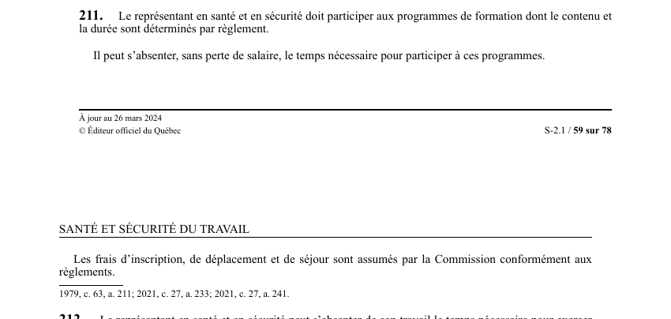

art-211-LSST : formation représentant santé sécurité
Un article du wiki ⚖️ Recueil législatif
🌐 LegisQuébec · 📄 PDF officiel (page 59)
Texte officiel : capture du PDF

🔗 Ouvrir a cette page : LSST.pdf : page 59 · texte a jour au 26 mars 2024
En bref
Le représentant en santé et en sécurité doit participer aux programmes de formation dont le contenu. Il s'agit d'une obligation.
- Et la durée sont déterminés par règlement.
- Contenu et durée déterminés par règlement.
- Frais assumés par la Commission.
Voir aussi
- art. 209 : désignation représentant santé sécurité · obligation : lorsque les activités sur un chantier occuperont simultanément au moins 10 travailleurs de la construction, un représentant en santé et en sécurité doit être désigné dès le début des travaux à la majorité des travailleurs présents ; à défaut.
- art. 210 : fonctions représentant santé sécurité · le représentant en santé et en sécurité a pour fonctions d'inspecter les lieux de travail, d'enquêter sur les accidents, d'identifier les situations dangereuses, de faire des recommandations incluant les risques psychosociaux, d'assister les travailleurs.
- art. 212 : temps exercice fonctions représentant · faculté : le représentant en santé et en sécurité peut s'absenter le temps nécessaire pour exercer ses fonctions d'inspection, d'accompagnement et d'intervention lors du droit de refus.
- art. 212.1 : représentant plein temps chantier majeur · obligation : lorsqu'un chantier occupera simultanément au moins 100 travailleurs ou que le coût total des travaux excédera 12 000 000 $, un ou plusieurs représentants en santé et en sécurité affectés à plein temps doivent être désignés par les associations représentatives.
- ↑ Loi : LSST
Pages qui pointent ici (4)
- art-209-LSST, lorsqu il prévu que Recueil législatif
- art-210-LSST, représentant en santé en Recueil législatif
- art-212-LSST, Commission Recueil législatif
- art-212.1-LSST, malgré articles lorsqu il Recueil législatif